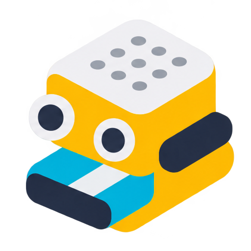
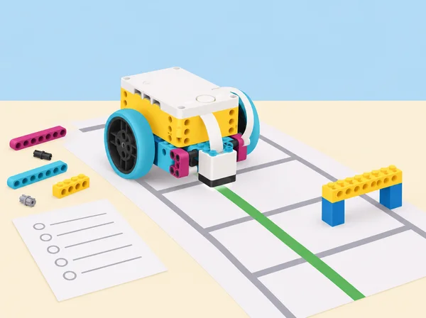

SPIKE Prime Tercer cicle Tecnologia, Matemàtiques i Pensament Computacional ⏱️ 6 lliçons · 7–10 sessionsDepurar per arribar-hi
🏷️ Depuració i mobilitat
🌱 Situació, repte i intenció
ací se’n creen recorreguts, casos de prova i registres propis. No es transporten llibres reals ni s’utilitza el robot amb persones en moviment.
🎯 Aprenentatges i vocabulari
- Diferenciar una avaria de muntatge d’un error en la seqüència de programa.
- Formular una hipòtesi de fallada i canviar una sola variable en cada prova.
- Construir i depurar una ruta amb sensors, casos límit i registre de resultats repetits.
- Justificar que un canvi resol el problema sense ocultar els casos que encara fallen.
🧰 Materials i preparació
Un set SPIKE Prime 45678 i dispositiu amb l’app per parella; models oficials Broken, Track Your Packages i Break Dancer disponibles dins l’app quan s’usen; paper quadriculat, retoladors, regla, fulls de depuració i materials per a una ruta de taula. El docent prepara els errors de muntatge sense danyar cap motor, sensor ni cable; si no és segur alterar el kit, empra fotografies o esquemes.
Verifiqueu que el sensor de color llig la superfície triada i que el model pot fer la ruta abans de la sessió. Cap obstacle ha de posar en risc persones ni peces.
📅 Seqüència didàctica
Depuració del model: el plòter de la mediateca (Broken, 90–135 min)
Fase 1 · Activem i prediem
Fase 2 · Explorem i construïm
l’equip decideix quin defecte comprovar primer i prova cada reparació per separat. Si es construeix un plòter propi, prepareu quatre avaries equivalents sense afegir càrrega al motor ni forçar engranatges.
Fase 3 · Expliquem i registrem
Rutina de diagnòstic: «què veig? / què havia de passar? / quina peça o connexió ho podria explicar? / quina prova aïllada ho confirmaria?». Canvieu una sola variable, repetiu la prova i anoteu resultat i pròxim pas; no reprogramem un model que encara té una avaria mecànica.
Fase 4 · Apliquem i millorem
Fase 5 · Comprovem i reflexionem
Evidències i suport: full d’ovals, mapa d’avaries, taula hipòtesi-prova-resultat, reparació i reflexió sobre l’ajuda demanada a altres equips, temps i peces. Per començar, el docent facilita dos possibles mòduls; ampliació: redactar instruccions que permeten a un altre equip reproduir la diagnosi sense donar-li la resposta. Conserveu el model per a S2. Durada ajustable: 90 min si es treballa un muntatge preparat; fins a 135 min si cal muntar i verificar-lo.
Depuració del programari: trobar el tram que falla (Track Your Packages, 90 min)
Fase 1 · Activem i prediem
Fase 2 · Explorem i construïm
Fase 3 · Expliquem i registrem
Fase 4 · Apliquem i millorem
Fase 5 · Comprovem i reflexionem
Desmuntar els passos de l’error ( Dancer Break Down, 45 min)
Fase 1 · Activem i prediem
Fase 2 · Explorem i construïm
Comproveu el port i decidiu quina correcció preserva millor el disseny validat; normalment corregiu l’adreça del programa, no desmunteu un mecanisme ben construït.
Fase 3 · Expliquem i registrem
Fase 4 · Apliquem i millorem
Fase 5 · Comprovem i reflexionem
Ballar amb colors ( Dance to the Color, 45 min)
Fase 1 · Activem i prediem
Preparació: manteniu el model de ballarí de S3, connecteu sensor de color i hub carregat, i proveu quins colors detecta de manera estable amb la llum de l’aula i la distància de lectura del vostre muntatge.
Fase 2 · Explorem i construïm
Fase 3 · Expliquem i registrem
Fase 4 · Apliquem i millorem
Fase 5 · Comprovem i reflexionem
Dissenyar una ruta nova (Mini-Challenge: New Routes, 90 min)
Fase 1 · Activem i prediem
Fase 2 · Explorem i construïm
Fase 3 · Expliquem i registrem
Fase 4 · Apliquem i millorem
Fase 5 · Comprovem i reflexionem
Professions digitals, justícia i seguretat (90 min)
Fase 1 · Activem i prediem
Preparació: reuniu imatges o fitxes pròpies d’ocupacions i fonts valencianes fiables sobre formació i tasques; equips de quatre amb rols rotatius i registre de font/data.
Fase 2 · Explorem i construïm
Fase 3 · Expliquem i registrem
Fase 4 · Apliquem i millorem
Fase 5 · Comprovem i reflexionem
🧪 Evidències i avaluació
Diagrama de diagnòstic, pseudocodi, programa anotat, graella de casos de prova, dades del sensor, diari d’errors i reparacions, ruta iterada i presentació professional. Valoreu que l’equip diferencie maquinari i programari, descomponga el problema, prove metòdicament, use casos esperats i inesperats, torne a una versió funcional i explique per què el canvi resol el símptoma. Autoavaluació amb col·laboració, gestió del temps i cura de peces, més retorn entre equips centrat en evidència.
♿ Participació, accessibilitat i seguretat
Doneu alternatives en paper per a les proves de trajecte, rutes accessibles des de la posició asseguda i rols de pilotatge, observació, registre i revisió. Manteniu el robot dins d’una superfície delimitada, amb una càrrega lleugera i sense acostar-lo a vianants, escales o vores. No useu contrasenyes ni dades reals en l’activitat de seguretat; el tema professional és una conversa sobre pràctiques responsables, no una intrusió a sistemes.
🔗 Referents i adaptació
Adapta les sis lliçons de la unitat 3 Troubleshooting and Debugging del pla oficial *Foundations of Physical Computing*:
la temàtica, la ruta, els fulls de registre i la il·lustració són propis. Els models i els fulls oficials es consulten a LEGO Education, no es reprodueixen ací.